Conventional Methods for Analyzing Mechanical Systems
Mechanical systems can be analyzed using two main approaches:
- Conventional (Newtonian) Methods — based on direct application of Newton’s laws.
- Analytical (Lagrangian or Hamiltonian) Methods — based on energy relations.
This lecture introduces the conventional force-based approach and transitions into the Lagrangian formulation.
Conventional Method (Force-Based Analysis)
When analyzing a mechanical system composed of multiple components, we proceed as follows:
- Analyze the number of bodies
- Isolate the components
- Place the force vectors
- Include external forces
- Apply the governing equations
- Static system:
$$ \sum F = 0 $$
- Dynamic system:
$$ \sum F = m \ddot{q}(t) $$
- Rotational system:
$$ \sum \tau = J \ddot{q}_\theta(t) $$
Lagrangian Formulation
Lagrangian:
$$ L = T - V $$
Generalized coordinates (q_i), velocities (\dot{q}_i), generalized forces (Q_i):
$$ \delta W = \sum_i Q_i \delta q_i $$
Lagrange’s equation:
$$ \frac{d}{dt} \left( \frac{\partial L}{\partial \dot{q}_i} \right) - \frac{\partial L}{\partial q_i} = Q_i $$
Example 1 — Translational Mass–Spring System

- Generalized coordinate: (q)
- Kinetic energy: (T = \frac{1}{2} m \dot{q}^2)
- Potential energy: (V = \frac{1}{2} k q^2)
Lagrangian:
$$ L = \frac{1}{2} m \dot{q}^2 - \frac{1}{2} k q^2 $$
Equation of motion:
$$ m \ddot{q} + k q = 0 $$
Solution:
$$ q(t) = A \cos(\omega t + \phi), \quad \omega = \sqrt{\frac{k}{m}} $$
4. Example 2 — Torsional (Rotational) Spring–Inertia System
Consider a rigid disk of moment of inertia (J) connected to a torsional spring of stiffness (k_\theta).
Let the generalized angular coordinate be (q_\theta) (angular displacement).
Step 1 — Generalized coordinate
$$ q_\theta = \theta $$
Step 2 — Express energies
- Kinetic energy (rotational):
$$ T = \frac{1}{2} J \dot{q}_\theta^2 $$
- Potential energy (torsional spring):
$$ V = \frac{1}{2} k_\theta q_\theta^2 $$
Step 3: Form the Lagrangian
The Lagrangian ($L$) is defined as the kinetic energy ($T$) minus the potential energy ($V$).
$$ L = T - V = \frac{1}{2} J \dot{q}\theta^2 - \frac{1}{2} k\theta q_\theta^2 $$
Step 4: Apply Lagrange’s Equation
The equation of motion is found using Lagrange’s equation for a conservative system:
$$ \frac{d}{dt} \left( \frac{\partial L}{\partial \dot{q}\theta} \right) - \frac{\partial L}{\partial q\theta} = 0 $$
Computing the Terms
First, we find the partial derivatives of the Lagrangian:
$$ \frac{\partial L}{\partial \dot{q}\theta} = J \dot{q}\theta $$
$$ \frac{\partial L}{\partial q_\theta} = -k_\theta q_\theta $$
Next, we take the time derivative of the first term:
$$ \frac{d}{dt} \left( \frac{\partial L}{\partial \dot{q}\theta} \right) = \frac{d}{dt} (J \dot{q}\theta) = J \ddot{q}_\theta $$
Equation of Motion
Substituting these results back into Lagrange’s equation gives the equation of motion:
$$ J \ddot{q}\theta - (-k\theta q_\theta) = 0 $$
$$ J \ddot{q}\theta + k\theta q_\theta = 0 $$
Step 5: Write the Solution
This is the standard differential equation for simple harmonic motion. The general solution for the angular position $q_\theta(t)$ is:
$$ q_\theta(t) = A \cos(\omega_\theta t + \phi) $$
The natural frequency of oscillation, $\omega_\theta$, is given by:
$$ \omega_\theta = \sqrt{\frac{k_\theta}{J}} $$